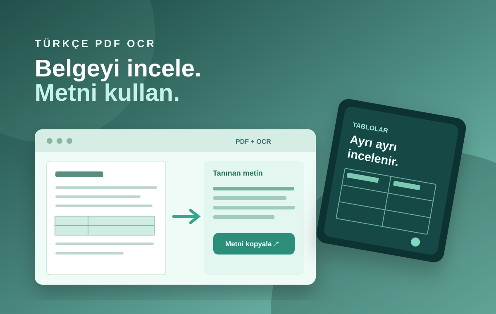
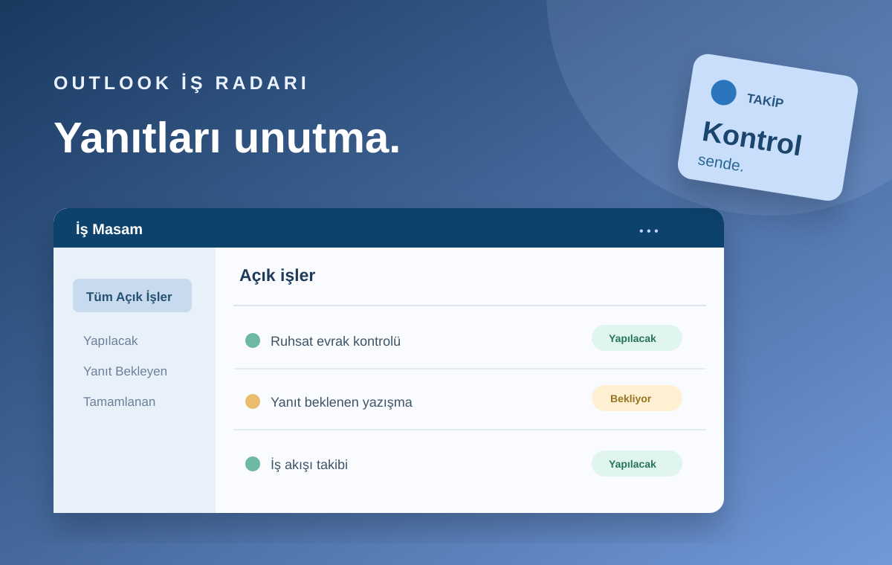
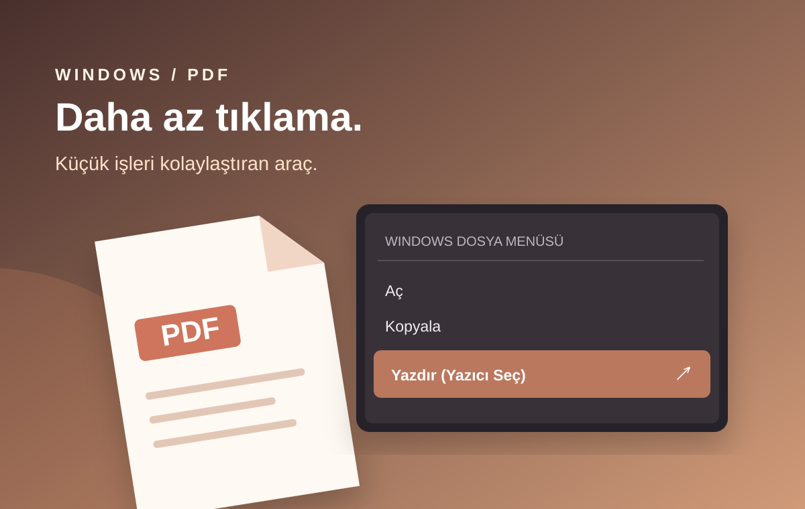

01
ANDROID · YEREL YAPAY ZEKA
GitHub Günİzi
Ses kaydı, konuşma dökümü ve cihaz içinde özetleme.
İdari işler uzmanıyım. Mağaza açılışları, ruhsatlandırma ve resmi kurum süreçleriyle ilgileniyorum. Günlük işlerimde eksikliğini gördüğüm araçları da geliştiriyorum.
Her proje günlük hayatta karşılaştığım bir ihtiyaçtan doğdu. Henüz geliştirme aşamasında olanlar da var. Aşağıdan projeleri inceleyebilir, GitHub'daki kaynak kodlarına ulaşabilirsin.
Ses kaydı, konuşma dökümü ve cihaz içinde özetleme.

02Taranmış belgelerde metin ve tablo inceleme.

03Yanıt bekleyen e-postaları ve açık işleri takip etme.

04Dosya Gezgini'nden hızlı PDF yazdırma.
Mesleğimde süreçleri yönetiyorum. Boş zamanlarımda ise işi kolaylaştıracak araçlarla uğraşıyorum. İkisini birbirinden ayrı düşünmüyorum.
Mağaza açılışı, ruhsatlandırma, abonelik ve resmi kurum işlemleri gibi farklı tarafları aynı takvimde buluşturan süreçleri takip ediyorum.
İdari işler ve operasyon alanında 7 yılı aşkın deneyimim var. Lojistik, sevkiyat planlama ve vardiya yönetimi geçmişim bugün yaptığım işlere farklı bir bakış kazandırıyor.

Mağaza açılışları, belediyelerle yürütülen işlemler, ruhsat başvuruları, abonelikler ve evrak süreçlerinin takibi.
Depo operasyonlarının ve sevkiyat akışının koordinasyonu.
Sevkiyat planlaması, iş akışının takibi ve ekipler arası koordinasyon.
Günlük işlerin, vardiya düzeninin ve operasyonel önceliklerin yönetimi.
Farklı uygulamalar üzerinde çalışırken, neden geliştirdiğimi ve hangi ihtiyaçları çözmeyi hedeflediğimi LinkedIn'de anlatıyorum.
Projelerle ilgili görüşlerini paylaşmak veya profesyonel olarak bağlantı kurmak istersen LinkedIn üzerinden ulaşabilirsin.